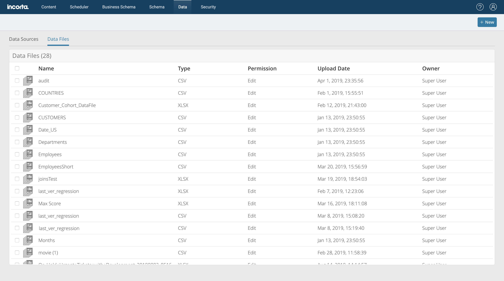
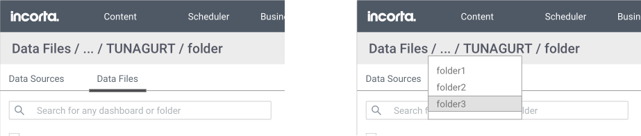
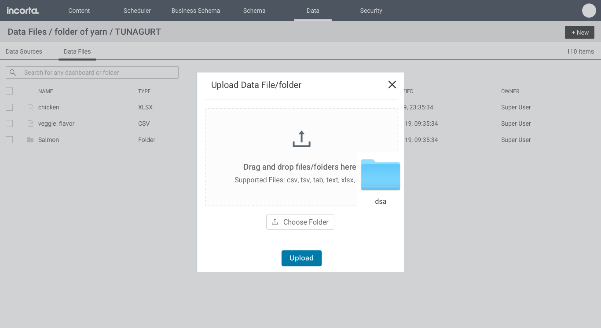
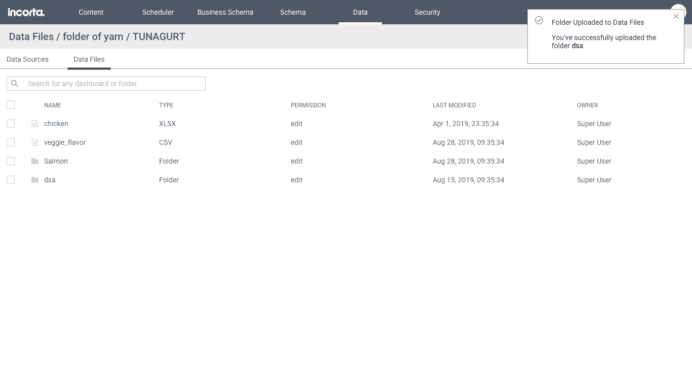
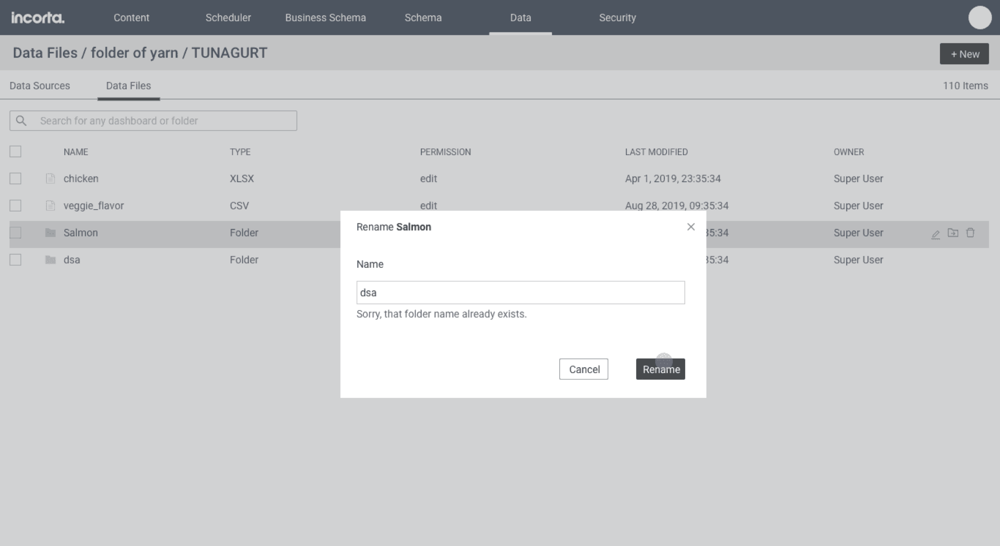
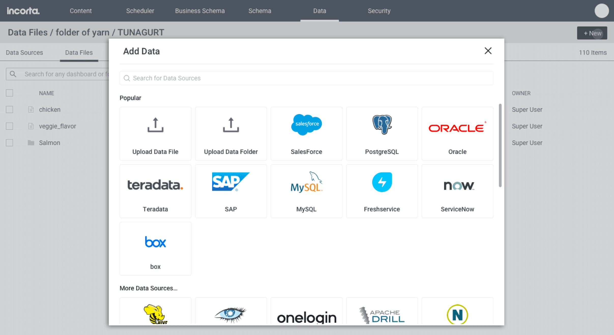
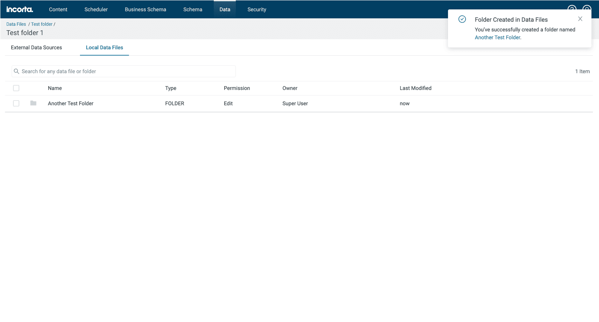
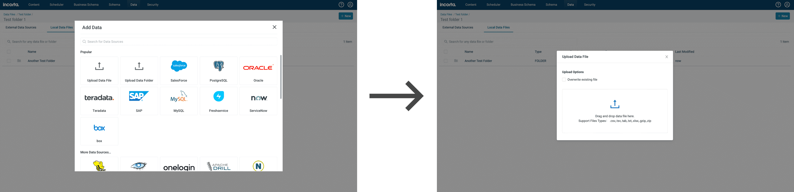
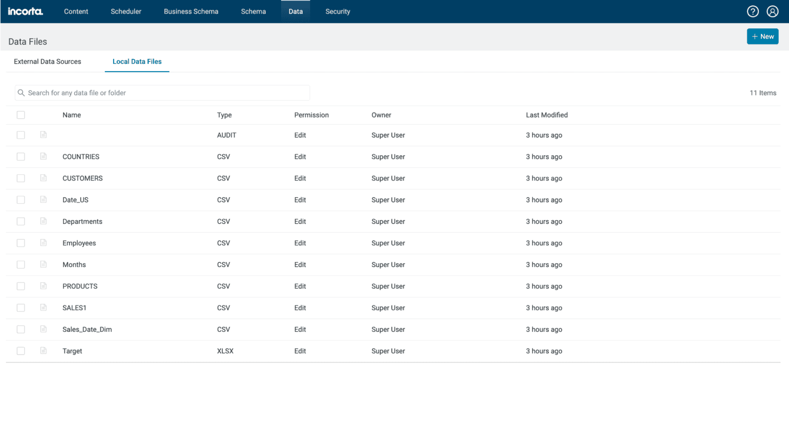

Incorta: Data File Directory
Solutions allowing for better file management in the Incorta app
Trang Tran

About Incorta
Incorta is a hyper-converged data analytics app that removes the ETL process in data warehousing and lets users make use of their data fast. In the Incorta desktop app, users can provide data in two ways: upload CSV/XML files straight into their instance or connect to a database. From this information, tables can be joined to create schemas and then ultimately, data visualizations.
The Problem Today
The PM came to us with a huge customer issue: Incorta users are adding hundreds of files into a root location without capabilities of organizing any of them. The customer ask was that we provide a solution that allows actions like so creating folders, searching, sorting, and renaming.
The old Data UI has not yet been migrated to React and did not provide a way for users to fully customize their environment
I led the UX design efforts for this feature. I worked with a PM, the engineering team, the server team, and collaborated with the lead UX designer occasionally for brainstorming and feedback.
The User Story
I spent some time discussing with internal solutions architects, PMs, and pre-sales who informed me with details about our users and their complaints. The main user of this feature is the Data Analyst because they are the power users responsible for bringing the data into their systems in order to create schemas.
Persona: The Data Analyst (Power User)
40 years old
Data Analyst
As a power user of the Incorta app, Trisha manages the data. She connects databases, uploads files, and constantly shares files with other users. Trisha gets frustrated with not being able to categorize her data files. As a result, she is left to look for the files needed each time when she visits the Data tab.
Wants personalization. Wants to be able to customize her environment in a way where files are grouped into folders so that they're easier to to find and share amongst others in her company.
Very technical and loves being able to customize everything.
Some of the Data Analyst's pain points include:
We realized that the Data Analyst's goal is to save time and effort. If they can spend less time searching for files, then they can use that time to do other productive things. This solution will empower users to customize their environment within Incorta.
Brainstorming the Enhancements
The PM and I brainstormed ways to upgrade the Data tab so that it answers the user's needs. On a whiteboard, we listed user actions and prioritized them based on how related they are to the urgent asks. Here are the tasks we came up with for quick wins:
This feature would also require an enhancement in our navigation. Now that users will be able to nest folders, they'll need a way to traverse through previous folders. We currently don't show breadcrumb paths anywhere in our app, so this navigation would be an important component.
Designing the New Breadcrumb
The only part of our app that utilizes a (half-baked) directory is the Content tab, where dashboards and folders can be grouped into further folders. However, the current implementation doesn't provide a way for users to navigate back to folders in a path.
Incorta's current half-baked breadcrumb
Users couldn't see the previous folder, but also couldn't access the root location easily without clicking on the left carets each time. We've had ongoing complaints from customers and internal users about this experience.
Solution: I designed a breadcrumb component to show the root location, an option to look at multiple folders in that path, the previous folder, and the current folder that the user is in.
The breadcrumb navigation in the instance of many folders in a path
Wireframes to Show the Possible User Scenarios
I prototyped the flows a user would go through as they create folders, upload files/folders, rename, search, sort, as well as showing notification alerts.
The design demonstrates the concept of uploading both files and folders in one dialog
Screen showing successful upload
The new design will support renaming of folders amongst other various functions
The Engineering Constraints
In a sync with the server team and front-end team, we found out that some of our tasks would not be able to fit in the upcoming release.
We realized the complexity of folders and permissions after meeting with the teams. As a result of our discussion, we agreed to remove some of the enhancements (moving folders and folder-specific permissions) to include them in the release. For the first release, we are only attaching permissions to files instead of folders. I updated the wireframes to limit the scope of actions and handed it off to Engineering.

The Move icon was removed in the newest design since we didn't have enough engineering resources to work on that back-end support
Uploading data files and folders have been separated into two actions since engineering could not support a single dialog
Touching Up the Breadcrumb Again
After implementation, we reviewed the feature in our dev environment. In a design sync, we eventually agreed that the title of the page shouldn't styled like the breadcrumb path. The feeback was that the page title should assume its own identity, thus it was decided to move the title of the page to the next line. It would also be helpful to users if the page title stayed in one spot, for consistency.
The newest version of the breadcrumb that shows the title page in a separate style
The new structure for the Data tab along with the enhanced breadcrumb
Feedback After Rolling Out the Feature
After it was QA'd and approved, the feature was rolled out to all users. To see how the feature fared, PMs went onsite to solicit feedback from engaged data analysts. We had positive feedback from customers, despite not being able to truly treat the Data tab like a directory yet. We were told that as a result of the feature, they were able to limit the time spent finding and sharing files. They also expressed their excitement for the upcoming enhancements in the second phase.
Phase 1 complete!
The enhanced flow of adding a data file or data source
The new Data UI built with React
This support for data files was a long-awaited wish for the customers. Moving forward, the breadcrumb design is going to be the standard implementation for the other pages in Incorta whenever applicable. The next phase for this project is currently in the works, which includes folder-specific permissions and moving folders around.
The Takeaway: Thoughts and Lessons
Working on this feature was a reminder that different teams have different priorities. While this feature is an important one to the users, we were limited by scope because the engineering teams were unable to support everything we had asked for. It was a strategic course of action to give the users what they asked for along with easy improvements, followed by bigger enhancements in the next release.